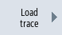
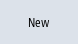

Procedure
 | 1. | Select the "Diagnostics" operating area. |
 | 2. | Press the menu forward key and the “Trace" softkey. |
|   | 3. | Press the "Load trace" and "New" softkeys. The "New Session" window opens in which the "Session" name is recommended. The file format is automatically specified as ".xml". |
| | 4. | Supplement the file name or enter a new file name. |
 | 5. | Select a variable type and press the "OK" softkey. You return to the "Select variables for trace:....” window. The name of the session that has been newly created is displayed in the header. |
See also:
Trace
General procedure
Trace settings - procedure
Trace options
Displaying details of a variable
Variables filter/search